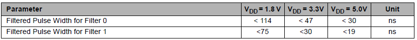

The Filter (FILTER) logic cells is an internal RC filter. See Table 1 for typical pulse widths that are filtered.
The output can be inverted in addition to the delay.
Delay(ns) is the total delay from input to output of the Filter.
Pulse Width(ns) is the pulses that are filtered out by the FILTER component.

Table 1. Typical Filtered Pulse Widths